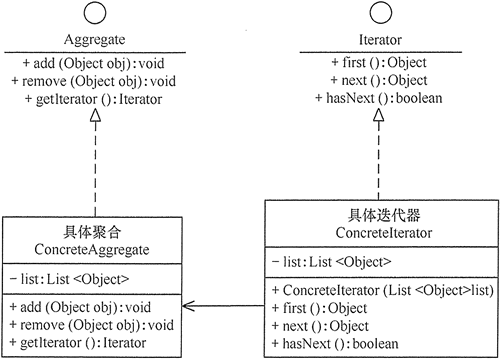

迭代器模式理解剖析以及应用

迭代器模式
迭代器模式提供一个对象来顺序访问聚合对象中的一系列数据，而不暴露聚合对象的内部表示。迭代器模式是 Java 和 .Net 编程环境中非常常用的设计模式。这种模式用于顺序访问集合对象的元素，不需要知道集合对象的底层表示。
迭代器模式是一种对象行为型模式
意图
- 提供一种方法顺序访问一个聚合对象中各个元素, 而又无须暴露该对象的内部表示。
解决问题
不同的方式来遍历整个整合对象。
何时使用？
遍历一个聚合对象。
应用环境举例
- 访问一个聚合对象的内容而无须暴露它的内部表示。
- 需要为聚合对象提供多种遍历方式。
- 为遍历不同的聚合结构提供一个统一的接口。
优点
- 它支持以不同方式遍历一个聚合，甚至可以自定义迭代器的子类以支持新的遍历。
- 遍历任务交由迭代器完成，这简化了聚合类。
- 在同一个聚合上可以有多个遍历。
- 在迭代器模式中，增加新的聚合类和迭代器类都很方便，无须修改原有代码。
- 访问一个聚合对象的内容而无须暴露它的内部表示。
- 封装性良好，为遍历不同的聚合结构提供一个统一的接口。
缺点
由于迭代器模式将存储数据和遍历数据的职责分离，增加新的聚合类需要对应增加新的迭代器类，类的个数成对增加，这在一定程度上增加了系统的复杂性。
注意
迭代器模式就是分离了集合对象的遍历行为，抽象出一个迭代器类来负责，这样既可以做到不暴露集合的内部结构，又可让外部代码透明地访问集合内部的数据。
类图
- 抽象聚合（Aggregate）角色：定义存储、添加、删除聚合对象以及创建迭代器对象的接口。
- 具体聚合（ConcreteAggregate）角色：实现抽象聚合类，返回一个具体迭代器的实例。
- 抽象迭代器（Iterator）角色：定义访问和遍历聚合元素的接口，通常包含 hasNext()、first()、next() 等方法。
- 具体迭代器（Concretelterator）角色：实现抽象迭代器接口中所定义的方法，完成对聚合对象的遍历，记录遍历的当前位置。
实现
- 抽象聚合
1
2
3
4
5interface Aggregate {
public void add(Object obj);
public void remove(Object obj);
public Iterator getIterator();
} - 具体聚合
1
2
3
4
5
6
7
8
9
10
11
12
13
14
15
16
17
18import java.util.*;
class ConcreteAggregate implements Aggregate {
private List<Object> list = new ArrayList<Object>();
public void add(Object obj) {
list.add(obj);
}
public void remove(Object obj) {
list.remove(obj);
}
public Iterator getIterator() {
return (new ConcreteIterator(list));
}
} - 抽象迭代器
1
2
3
4
5
6interface Iterator {
Object first();
Object next();
boolean hasNext();
} - 具体迭代器
1
2
3
4
5
6
7
8
9
10
11
12
13
14
15
16
17
18
19
20
21
22
23
24
25
26
27
28
29
30
31
32import java.util.*;
class ConcreteIterator implements Iterator {
private List<Object> list = null;
private int index = -1;
public ConcreteIterator(List<Object> list) {
this.list = list;
}
public boolean hasNext() {
if (index < list.size() - 1) {
return true;
} else {
return false;
}
}
public Object first() {
index = 0;
Object obj = list.get(index);
return obj;
}
public Object next() {
Object obj = null;
if (this.hasNext()) {
obj = list.get(++index);
}
return obj;
}
} - 测试结果：
1
2
3
4
5
6
7
8
9
10
11
12
13
14
15
16public class IteratorPattern {
public static void main(String[] args) {
Aggregate ag = new ConcreteAggregate();
ag.add("中山大学");
ag.add("华南理工");
ag.add("韶关学院");
System.out.print("聚合的内容有：");
Iterator it = ag.getIterator();
while (it.hasNext()) {
Object ob = it.next();
System.out.print(ob.toString() + "\t");
}
Object ob = it.first();
System.out.println("\nFirst：" + ob.toString());
}
}1
2聚合的内容有：中山大学 华南理工 韶关学院
First：中山大学
实例
创建一个叙述导航方法的 Iterator 接口和一个返回迭代器的 Container 接口。
实现了 Container 接口的实体类将负责实现 Iterator 接口。
IteratorPatternDemo，我们的演示类使用实体类 NamesRepository 来打印 NamesRepository 中存储为集合的 Names。

- 创建接口
Iterator.javaContainer.java1
2
3
4public interface Iterator {
public boolean hasNext();
public Object next();
}1
2
3public interface Container {
public Iterator getIterator();
} - 创建实现了 Container 接口的实体类。该类有实现了 Iterator 接口的内部类 NameIterator。
NameRepository.java1
2
3
4
5
6
7
8
9
10
11
12
13
14
15
16
17
18
19
20
21
22
23
24
25
26
27
28
29public class NameRepository implements Container {
public String[] names = {"Robert" , "John" ,"Julie" , "Lora"};
public Iterator getIterator() {
return new NameIterator();
}
private class NameIterator implements Iterator {
int index;
public boolean hasNext() {
if(index < names.length){
return true;
}
return false;
}
public Object next() {
if(this.hasNext()){
return names[index++];
}
return null;
}
}
} - 使用 NameRepository 来获取迭代器，并打印名字。
IteratorPatternDemo.java结果1
2
3
4
5
6
7
8
9
10
11public class IteratorPatternDemo {
public static void main(String[] args) {
NameRepository namesRepository = new NameRepository();
for(Iterator iter = namesRepository.getIterator(); iter.hasNext();){
String name = (String)iter.next();
System.out.println("Name : " + name);
}
}
}1
2
3
4Name : Robert
Name : John
Name : Julie
Name : Lora